MovableTypeでの作り方
MovableTypeを利用するにはライセンスが必要ですが、現在のMovable Type 7の場合、1サーバーで99,000円（税込）となっています。以降、年間メンテナンスで33,000円（1年・税込）を払うことでバージョンアップなどにも対応することができます。
法人や個人事業などで利用する場合、通常ライセンスが必要になりますが、お試しで利用する際は１カ月間の無料トライアルを利用することができます。
■法人や団体、個人事業など商用の場合
Movable Type トライアルのお申し込み
一方、「個人無償ライセンス」もあり、こちらは個人名義でダウンロードし、レンタルサーバーなどで個人的な日記等を書くためのライセンスになります。
■個人的な日記等の場合
個人無償ライセンス
こちらの個人無償ライセンスの場合、アフィリエイトの利用はできますが、「1人のライセンス所有者が同時にインストールすることができる Movable Type は1つまでです。」との記載があるため、利用規約をよく読んでから利用するようにしましょう。
MovableTypeのインストール方法
ここでは既存のホームページをMovableTypeを使用して更新していく方法をご紹介します。
おおまかな利用手順ですが、まずはレンタルサーバーでデータベースを作成し、ユーザー名やパスワードを設定しておきます。
こちらはコアサーバーの例ですが、サイドバーの「データベース」→「データベースの新規作成」の箇所から設定することができます。作成しましたら、「データベース名」や「ユーザー名」、「パスワード」を控えておくようにしましょう。
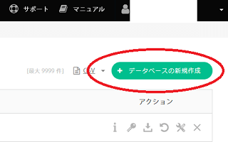
お使いのレンタルサーバーによってはデータベースを利用できないプランもあるため、まずはデータベースの利用が可能かどうかを確認することをおすすめします。
次に、ドメイン下などに「mt」などのフォルダを作成し、そちらにFTP接続などで上記のMovableTypeの中身をアップロードします。このフォルダ名については何でもかまいません。
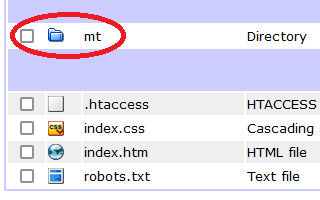
ファイルの中身に「mt.cgi」のファイルがあるかと思いますが、以下のような形になるようにアップロードすることをおすすめします。
www.example.com/mt/mt.cgi
もし、既存のホームページはそのままに、ドメインの直下に付属でブログを設置する場合には、ドメインの下に「blog」フォルダなどを設置したのち、そちらに「mt」などのフォルダを作成することをおすすめします。
この場合、以下のようになるかもしれません。
www.example.com/blog/mt/mt.cgi
アップロードする際、ファイル数が多いため、格安サーバーの場合はエラーが出て失敗するかもしれません。
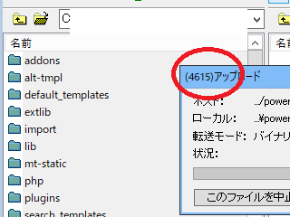
アップロードが完了したら、.cgiファイルのパーミッションの属性を「755」あたりに変更します。
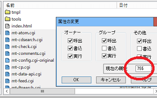
完了しましたら、「www.example.com/mt/mt.cgi」のURLにアクセスします。
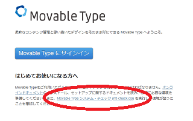
ここでシステムチェックをしておきましょう。利用できますと表示されれば、問題ありません。
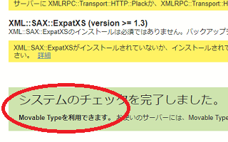
サインインしたのち、先ほど作成したデータベース名などを入力して管理画面にログインします。
テンプレートのカスタマイズ方法
管理画面にログインしたのち、「デザイン」の箇所から適当なテーマを選んで適用しましょう。こちらはプロフェッショナルブログを適用したものですが、必要ないものは削除することをおすすめします。
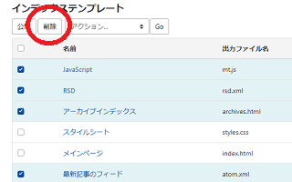
この場合、index.htmlの「メインページ」と「スタイルシート」、そして個別ページ用に「ウェブページ」の３つを残してみました。
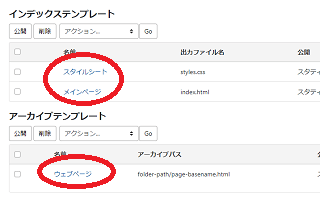
自サイトの出力ファイル名と違う場合、出力ファイル名を変更しておくことをおすすめします。
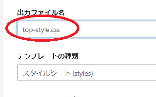
メインページについては「index.html」で問題ないかと思いますが、個別のウェブページは「フォルダ名/個別ページ名.html」のような形式を選択することができます。
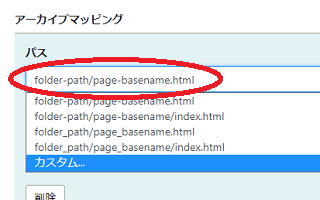
パーマリンクのURLが変更になってしまうと、他サイトから参照されているリンクなどがリンク切れになってしまう可能性があるため、既存のURLどおりに出力されているのかを確認しておくことをおすすめします。
トップページ（メインページ）の設定方法
こちらは「メインページ」のデフォルトの状態ですが、<$mt:Include module="サイドバー"$>や<$mt:Include module="バナーフッター"$>などの文字列があるかと思います。
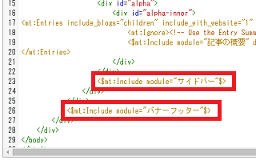
これらの箇所は、「テンプレートモジュール」の「サイドバー」や「バナーフッター」に記入されている内容が表示されます。
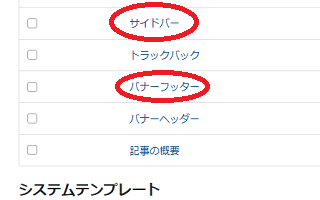
そのため、まずは自サイトの「サイドバー」の内容をこちらに上書きして記述しておくとよいでしょう。当サイトでいえば、<aside id="sidebar"></aside>で囲んだサイドバーの箇所になりますが、そちらを記入しておきます。
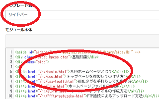
この「テンプレートモジュール」を保存をし、先ほどの「メインページ」へと戻ります。
次に、自サイトの「index.html」のHTMLソースの内容にて、「メインページ」のデフォルトの内容を上書きしたのち、サイドバーの箇所を先ほどの<$mt:Include module="サイドバー"$>で置き換えます。
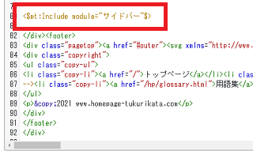
同じように、フッターの箇所なども<$mt:Include module="バナーフッター"$>に置き換えます。
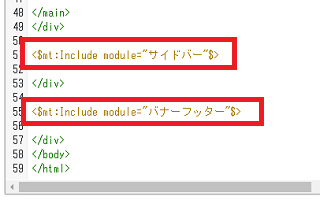
このテンプレートモジュールの内容を書き変えることで、メインページの内容を変更することができます。さらに、個別ページなどにも設定しておけば、テンプレートモジュールの内容を変更することで、サイト全体のサイドバーやフッターの内容を一括で変更できるメリットがあります。
そのほか、同様にヘッダー部分なども設定しておくとよいでしょう。あるいは、テンプレートモジュールに「ぱんくずリスト」などと新規に作成し、該当する箇所を<$mt:Include module="ぱんくずリスト"$>などと置き換えていってもよいかと思います。
「メインページ」の設定が終了しましたら、再構築をしたのち、index.htmlのトップページにアクセスして確認します。
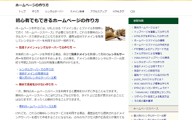
この場合、サイドバーなどは正常に反映されてはいるものの、フォントが当たっていません。
フォントや画像については「アセット」の箇所からフォルダを指定したのち、一括でアップロードしておくと反映されるはずです。面倒な場合は、FTP接続でサーバーへ直接アップロードしてもよいと思います。
個別ページ（ウェブページ）の設定方法
個別ページについては、ブログ記事などのテンプレートで作成する方法もありますが、ここでは「ウェブページ」で作成する例をご紹介します。
まず、自サイト内の適当な個別ページを選び、「ウェブページ」のテンプレートにHTMLソースを上書きして貼り付けますが、元のデフォルトのテンプレートはバックアップしておくとよいでしょう。
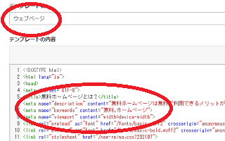
こちらの個別ページについても、サイドバーやフッターの箇所は、上記の<$mt:Include module="サイドバー"$>などで置き換えていきます。
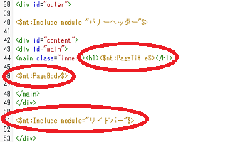
また、ページタイトルの部分については、<$mt:PageTitle$>などで置き換えていきます。本文については<$mt:PageBody$>などで置き換えます。そのほか、詳細は省きますが、ヘッダー部分などもうまい具合に設定しておきましょう。
あとは、フォルダやファイル名を指定し、本文をウェブページの箇所に記入して公開します。
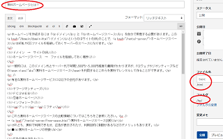
右上のマークを押せば、HTML編集モードに切り替えて、HTMLファイルを直接貼り付けることができます。
全てのページでそれぞれ投稿して再構築をすれば、<$mt:PageTitle$>や<$mt:PageBody$>の箇所が、それぞれの投稿の内容で表示されているはずです。
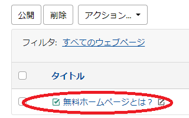
個別ページにアクセスして正常に表示されていることを確認します。
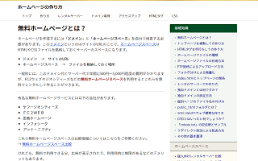
また、メタタグの説明文などについては、投稿画面で以下の箇所から個別に入力できます。
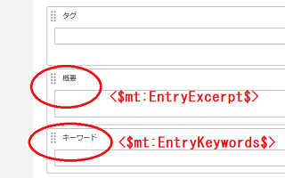
そのため、「ウェブページ」のテンプレートにて以下のように記述しておけば、個別ページごとに設定することができます。
<meta name="description" content="<$mt:EntryExcerpt$>">
<meta name="keywords" content="<$mt:EntryKeywords$>">
ほか、スタイルシートのテンプレートについては、自サイトの内容をそのまま上書きしても良いかと思います。CSSが複数ある場合はテンプレートを複製して追加するとよいでしょう。
上記の場合、既存サイトのテンプレートを使用するため、デフォルトのテンプレートはタグの参考のために使用しただけで削除してしまいましたが、新規サイトの場合はデフォルトのものをそのまま使用することをおすすめします。
また、ページ番号を割り振り、<mt:If tag="EntryID" eq="123">ほにゃらら</mt:If>のような形でモジュールを作成すれば、123番の記事にだけ「ほにゃらら」を個別に表示するといったことも可能になります。
上記のような方法で設定すれば、既存のホームページをそのままMovableTypeで運用することも可能かと思います。CMSにはWordPressなどもありますが、こちらのMovableTypeも検討してみるとよいでしょう。
MovableTypeの再構築とは？
パソコン上でホームページファイルを修正した際、サーバーにファイルをアップロードして上書きするまではサイトに反映されません。
同様に、MovableTypeの場合も再構築をし、既存ファイルを上書きして更新しないと変更が反映されないため、サイトを更新した際には忘れずに再構築をして更新するようにしましょう。
この点、MovableTypeの場合はページ数が多くなればなるほど再構築に時間がかかるデメリットがあります。
一方、WordPressの場合は現物のファイルを生成せず、アクセスがある度にデータベースの情報を元にファイルを作成するため、再構築をする必要がなく、サイトの更新が即時に反映されるメリットがあります。
ただし、MovableTypeのように静的ファイルを出力する場合、出来たファイルを違うサーバーに移動してもサイトは表示されるため、移転は楽かと思います。また、CMS側の設定ではどうにも反映されない場合、HTMLファイルを直接編集してしまうこともできます。
それぞれにメリット、デメリットがありますので、自分に合った方を使用されることをおすすめします。